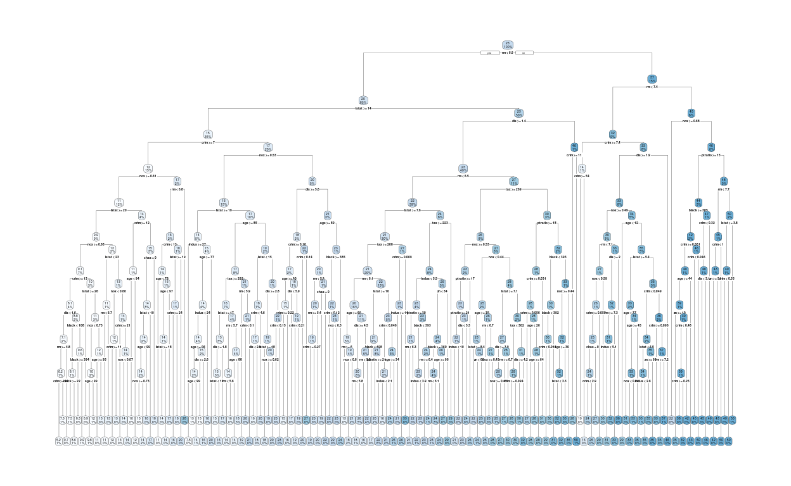
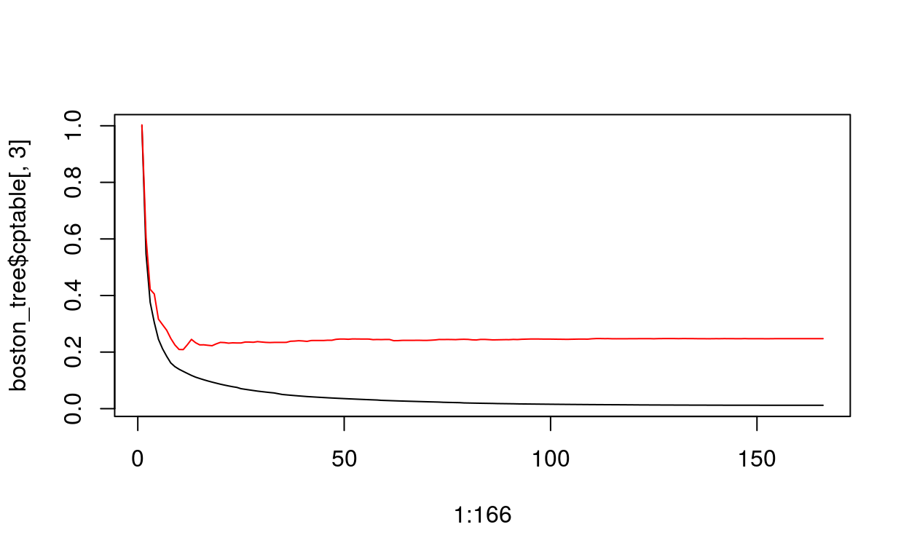
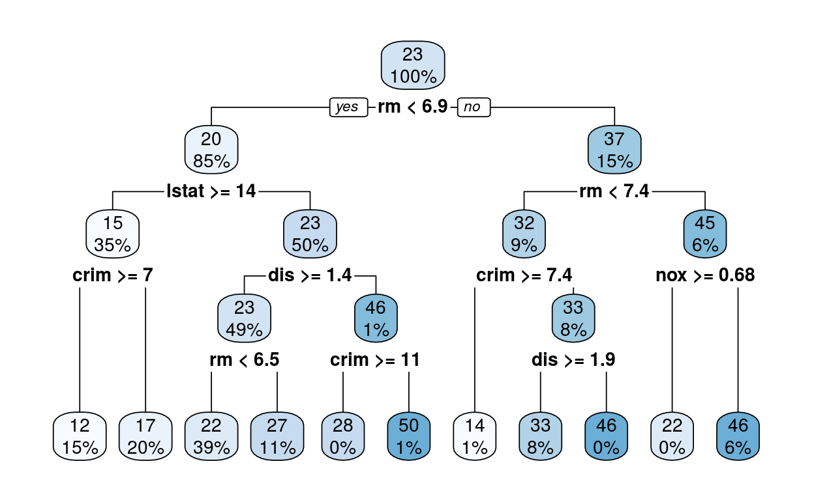

lec7
which(x < s) : x가 s보다 작은 것들의 위치는 어디니? x[group1_index] : 실제로 x가 s보다 작은 것들이 뭔지를 보여줌
예측값으로 사용할 것은 group별로 y값들의 평균임!
[1] -10 -9 -8 -7 -6 -5 -4 -3x[group2_index]
[1] -2 -1 0 1 2 3 4 5 6 7 8 9 10이제 저 것들을 s, x, y의 함수로 만들 것임
s의 후보군들(?) 정하고 그런 s들로 rss를 구하고자 한다.
# x랑 y를 고정시키고 s만 바뀐다고 생각
rss <- function(s){
x <- -10:10
y <- x^2
group1_index <- which(x < s)
group2_index <- which(x >= s)
x[group1_index]
x[group2_index]
pred_group1 <- mean(y[group1_index])
pred_group2 <- mean(y[group2_index])
result <- sum((y[group1_index] - pred_group1)^2)+
sum((y[group2_index] - pred_group2)^2)
result
}
rss(-2)
[1] 20916sapply(x,y) : x의 모든 원소들을 rss라는 함수에 입력값으로 넣어라
rss_result를 그려라 which.min(rss_result): rss_result의 몇번째 값이 가장 작은 값인지 확인해보기 s[which.min(rss_result)] : 그때의 s값은 뭐니?
그럼 그 s값을 기준으로 그룹이 나뉘니까 어떤 값이 예측값으로 사용될 것인지 알 수 있다.
왼쪽 그룹은 81.667로 예측을하고 오른쪽 그룹은 29.16667로 예측한다는 것을 알 수 있다.
linear regression에서는 ridge, lasso에 penalty를 부과하는 방법을 사용했음 그럼 tree에서는? -> prunning
[1] 506 14Boston %>% head()
crim zn indus chas nox rm age dis rad tax ptratio
1 0.00632 18 2.31 0 0.538 6.575 65.2 4.0900 1 296 15.3
2 0.02731 0 7.07 0 0.469 6.421 78.9 4.9671 2 242 17.8
3 0.02729 0 7.07 0 0.469 7.185 61.1 4.9671 2 242 17.8
4 0.03237 0 2.18 0 0.458 6.998 45.8 6.0622 3 222 18.7
5 0.06905 0 2.18 0 0.458 7.147 54.2 6.0622 3 222 18.7
6 0.02985 0 2.18 0 0.458 6.430 58.7 6.0622 3 222 18.7
black lstat medv
1 396.90 4.98 24.0
2 396.90 9.14 21.6
3 392.83 4.03 34.7
4 394.63 2.94 33.4
5 396.90 5.33 36.2
6 394.12 5.21 28.7regression 할때는 lm()에 넣었는데 decision tree에서는 rpart() 함수에 넣음
boston_tree <- rpart(medv ~ .,
data = Boston,
method = "anova", #rpart에서는 anova로 regression을 적용
control = rpart.control(
cp = 0, #anova split일 때: 나눌 때마다 R^2가 증가할텐데, 증가하는 정도를 어느정도로 할것인지
#cp가 높을수록 tree구조가 단순해진다
minbucket = 1, #terminal node가 1개 일 때까지 building
maxdepth = 10))
rpart.plot(boston_tree)

rpart.control 함수에 자동으로 xval하는 것이 저장되어있음(validation 진행)
class(boston_tree$cptable)
[1] "matrix" "array" matrix니까
plot(1:166, boston_tree$cptable[,3], type = "l") #cp에 따라서 rel error가 어떻게 바뀌는지(train set에 대한 error값-쭉 떨어짐)
points(1:166, boston_tree$cptable[,4],type = "l", col="red") #cp에 따라서 cross val가 어떻게 바뀌는지(cross validation에 대한 error값-가장 낮은 시점부터 overfitting이 시작됨)

printcp(boston_tree)
Regression tree:
rpart(formula = medv ~ ., data = Boston, method = "anova", control = rpart.control(cp = 0,
minbucket = 1, maxdepth = 10))
Variables actually used in tree construction:
[1] age black chas crim dis indus lstat nox
[9] ptratio rm tax zn
Root node error: 42716/506 = 84.42
n= 506
CP nsplit rel error xerror xstd
1 4.5274e-01 0 1.000000 1.00601 0.083470
2 1.7117e-01 1 0.547256 0.63285 0.058525
3 7.1658e-02 2 0.376083 0.41149 0.046188
4 5.9002e-02 3 0.304426 0.36616 0.044983
5 3.3756e-02 4 0.245424 0.30330 0.040041
6 2.6613e-02 5 0.211668 0.28547 0.040105
7 2.3572e-02 6 0.185055 0.26062 0.039774
8 1.3031e-02 7 0.161483 0.24977 0.039702
9 9.1470e-03 8 0.148452 0.24258 0.038392
10 7.4304e-03 9 0.139305 0.23876 0.038344
11 7.2654e-03 10 0.131874 0.27516 0.052212
12 7.0714e-03 11 0.124609 0.27706 0.052244
13 6.1263e-03 12 0.117537 0.27543 0.052248
14 4.8053e-03 13 0.111411 0.27289 0.052269
15 4.5609e-03 14 0.106606 0.26983 0.052030
16 4.2593e-03 15 0.102045 0.26981 0.052065
17 3.9410e-03 16 0.097785 0.27027 0.052070
18 3.6633e-03 17 0.093844 0.26612 0.051543
19 3.6603e-03 18 0.090181 0.27029 0.051674
20 3.1933e-03 19 0.086521 0.26825 0.051670
21 3.0157e-03 20 0.083328 0.26886 0.051748
22 2.8092e-03 21 0.080312 0.26575 0.051704
23 2.3613e-03 22 0.077503 0.26948 0.052113
24 2.2459e-03 23 0.075141 0.28070 0.053126
25 2.2354e-03 25 0.070649 0.28147 0.053123
26 2.1590e-03 26 0.068414 0.28074 0.053123
27 2.1525e-03 27 0.066255 0.27962 0.053120
28 2.0923e-03 28 0.064103 0.27871 0.053122
29 1.7169e-03 29 0.062010 0.28044 0.053126
30 1.6755e-03 30 0.060293 0.28029 0.053182
31 1.6210e-03 31 0.058618 0.28218 0.053176
32 1.3829e-03 32 0.056997 0.28233 0.053176
33 1.3690e-03 33 0.055614 0.28517 0.053239
34 1.3683e-03 35 0.052876 0.28516 0.053239
35 1.3616e-03 37 0.050139 0.28520 0.053239
36 1.3140e-03 38 0.048778 0.26809 0.048089
37 1.2266e-03 39 0.047464 0.26789 0.048089
38 1.1922e-03 40 0.046237 0.26658 0.048019
39 1.1395e-03 41 0.045045 0.26894 0.048031
40 1.1373e-03 42 0.043905 0.26841 0.048033
41 8.7789e-04 43 0.042768 0.26775 0.047975
42 8.7588e-04 44 0.041890 0.27164 0.048191
43 8.6854e-04 45 0.041014 0.27182 0.048190
44 8.3959e-04 46 0.040146 0.27197 0.048192
45 8.3249e-04 47 0.039306 0.27177 0.048193
46 7.8267e-04 48 0.038474 0.27208 0.048196
47 7.3876e-04 49 0.037691 0.27160 0.048196
48 7.2936e-04 50 0.036952 0.27316 0.048186
49 7.0451e-04 51 0.036223 0.27254 0.047658
50 6.8467e-04 52 0.035519 0.27388 0.047699
51 6.4293e-04 53 0.034834 0.27283 0.047677
52 6.4238e-04 54 0.034191 0.27405 0.047677
53 6.2996e-04 55 0.033549 0.27405 0.047677
54 6.2702e-04 56 0.032919 0.27405 0.047677
55 6.0453e-04 57 0.032292 0.27361 0.047682
56 5.9700e-04 58 0.031687 0.27310 0.047673
57 5.6185e-04 59 0.031090 0.27308 0.047679
58 5.5923e-04 60 0.030528 0.27713 0.047799
59 5.1245e-04 62 0.029410 0.27863 0.047814
60 5.0523e-04 63 0.028897 0.27838 0.047820
61 5.0046e-04 64 0.028392 0.27730 0.047819
62 4.8701e-04 65 0.027892 0.27654 0.047799
63 4.5515e-04 66 0.027405 0.27568 0.047794
64 4.3840e-04 67 0.026949 0.27568 0.047799
65 4.3262e-04 68 0.026511 0.27537 0.047794
66 4.3016e-04 69 0.026078 0.27585 0.047942
67 4.2266e-04 70 0.025648 0.27594 0.047943
68 4.2107e-04 71 0.025226 0.27609 0.047943
69 4.0174e-04 72 0.024804 0.27582 0.047959
70 3.9534e-04 73 0.024403 0.27651 0.048216
71 3.8774e-04 74 0.024007 0.27663 0.048215
72 3.8700e-04 75 0.023620 0.27685 0.048213
73 3.5562e-04 76 0.023233 0.27676 0.048209
74 3.5350e-04 78 0.022521 0.27781 0.048199
75 3.3828e-04 79 0.022168 0.27812 0.048199
76 3.3361e-04 80 0.021830 0.27972 0.048982
77 3.0902e-04 81 0.021496 0.27878 0.048953
78 3.0117e-04 82 0.021187 0.27918 0.048949
79 2.9874e-04 85 0.020283 0.27909 0.048947
80 2.8486e-04 86 0.019985 0.27881 0.048943
81 2.8354e-04 87 0.019700 0.27759 0.048903
82 2.6547e-04 88 0.019416 0.27756 0.048903
83 2.4856e-04 89 0.019151 0.27761 0.048910
84 2.4340e-04 90 0.018902 0.27772 0.048909
85 2.2630e-04 91 0.018659 0.27798 0.048912
86 2.0268e-04 92 0.018433 0.27755 0.048910
87 2.0227e-04 94 0.018027 0.27790 0.048933
88 1.9700e-04 95 0.017825 0.27763 0.048935
89 1.9283e-04 96 0.017628 0.27733 0.048936
90 1.9278e-04 97 0.017435 0.27722 0.048936
91 1.8150e-04 98 0.017242 0.27753 0.048933
92 1.7093e-04 100 0.016879 0.27855 0.048932
93 1.6931e-04 101 0.016708 0.27884 0.048936
94 1.6512e-04 102 0.016539 0.27876 0.048937
95 1.5957e-04 103 0.016374 0.27772 0.048932
96 1.5899e-04 104 0.016214 0.27695 0.048911
97 1.5802e-04 105 0.016055 0.27695 0.048911
98 1.4998e-04 106 0.015897 0.27737 0.048912
99 1.4646e-04 107 0.015747 0.27717 0.048912
100 1.4622e-04 108 0.015601 0.27717 0.048912
101 1.3582e-04 109 0.015455 0.27875 0.049481
102 1.3578e-04 110 0.015319 0.27875 0.049481
103 1.2800e-04 111 0.015183 0.27842 0.049474
104 1.2660e-04 112 0.015055 0.27853 0.049475
105 1.1803e-04 113 0.014929 0.27859 0.049479
106 1.1803e-04 114 0.014811 0.27882 0.049479
107 1.1464e-04 115 0.014693 0.27882 0.049479
108 1.1268e-04 116 0.014578 0.27917 0.049507
109 1.0396e-04 117 0.014465 0.27892 0.049508
110 9.5592e-05 118 0.014361 0.27871 0.049508
111 9.5592e-05 119 0.014266 0.27830 0.049509
112 8.9018e-05 120 0.014170 0.27820 0.049509
113 8.8491e-05 121 0.014081 0.27797 0.049508
114 8.7312e-05 122 0.013993 0.27797 0.049508
115 8.5215e-05 123 0.013905 0.27797 0.049509
116 8.4979e-05 124 0.013820 0.27797 0.049509
117 8.2424e-05 125 0.013735 0.27839 0.049508
118 7.8303e-05 126 0.013653 0.27837 0.049508
119 7.5849e-05 128 0.013496 0.27848 0.049515
120 7.3984e-05 129 0.013420 0.27843 0.049517
121 7.1916e-05 131 0.013272 0.27870 0.049522
122 7.1346e-05 132 0.013200 0.27867 0.049523
123 7.0426e-05 133 0.013129 0.27870 0.049523
124 6.8826e-05 134 0.013059 0.27904 0.049523
125 5.9406e-05 135 0.012990 0.27692 0.049451
126 5.6341e-05 136 0.012930 0.27735 0.049449
127 5.6243e-05 137 0.012874 0.27737 0.049448
128 5.4800e-05 138 0.012818 0.27737 0.049448
129 4.7944e-05 139 0.012763 0.27744 0.049448
130 4.7476e-05 140 0.012715 0.27754 0.049447
131 4.4481e-05 141 0.012667 0.27788 0.049450
132 4.3894e-05 142 0.012623 0.27838 0.049457
133 4.2490e-05 143 0.012579 0.27839 0.049458
134 4.1954e-05 144 0.012537 0.27839 0.049458
135 3.9954e-05 145 0.012495 0.27834 0.049459
136 3.9954e-05 146 0.012455 0.27787 0.049457
137 3.7495e-05 147 0.012415 0.27778 0.049456
138 3.7495e-05 148 0.012377 0.27778 0.049456
139 3.4132e-05 149 0.012340 0.27783 0.049459
140 3.2813e-05 151 0.012271 0.27779 0.049459
141 3.0960e-05 152 0.012239 0.27781 0.049459
142 2.4386e-05 153 0.012208 0.27811 0.049462
143 2.4386e-05 154 0.012183 0.27798 0.049463
144 2.2474e-05 155 0.012159 0.27809 0.049462
145 2.1128e-05 156 0.012136 0.27810 0.049462
146 1.8748e-05 157 0.012115 0.27826 0.049462
147 1.6407e-05 158 0.012097 0.27833 0.049457
148 1.5607e-05 159 0.012080 0.27831 0.049457
149 1.5607e-05 160 0.012065 0.27834 0.049457
150 1.4085e-05 161 0.012049 0.27834 0.049457
151 1.1276e-05 162 0.012035 0.27846 0.049457
152 1.1237e-05 163 0.012024 0.27848 0.049457
153 9.4421e-06 164 0.012012 0.27850 0.049457
154 7.6474e-06 165 0.012003 0.27834 0.049457
155 6.5939e-06 166 0.011995 0.27866 0.049463
156 5.6380e-06 167 0.011989 0.27866 0.049463
157 5.6185e-06 168 0.011983 0.27866 0.049463
158 4.8771e-06 169 0.011977 0.27875 0.049462
159 4.7211e-06 170 0.011973 0.27875 0.049462
160 3.9017e-06 171 0.011968 0.27876 0.049462
161 3.8237e-06 172 0.011964 0.27882 0.049462
162 3.1604e-06 173 0.011960 0.27882 0.049462
163 9.7543e-07 174 0.011957 0.27882 0.049462
164 6.2427e-07 175 0.011956 0.27880 0.049462
165 1.5607e-07 176 0.011955 0.27880 0.049462
166 0.0000e+00 177 0.011955 0.27880 0.049462spli할수록 rel error가 작아짐(train data에 대해서 학습을 더 잘한다고 볼 수 있음) xerror: cross validation error: train data로 학습할 때 xerror가 감소하다가 overfit되는 지점부터는 다시 증가함
우리의 목적: cp중에서 cross validarion이 작고, overfit되지 않은 값을 찾기를 원함
cp중에서 cross validarion이 작은 것이 어디있니: which.min():index를 찾아내고 그때의 cp값을 잡아옴
bestcp <- boston_tree$cptable[which.min(boston_tree$cptable[,"xerror"]),"CP"]
위에서 정한 cp를 기준으로 prune을 해라.
best_boston_tree <- prune(boston_tree, cp = bestcp)
rpart.plot(best_boston_tree)

복잡한 tree에서 prune을 하는 이유: optimal tree를 찾는 것이 목적인데, Gini index와 Entropy를 기준으로 설정하는 것보다 cp를 이용해서 prunning을 하는 방법이 좋은 tree를 찾는다고 알려져있음(in textbook) +남들에게 설명해주기 편함(현상해석을 분석할 때 어덯게 왜 작동하는지) -> predict 모델에서는 이유를 설명하기 보다는 잘 추정하는 것이 더 중요함